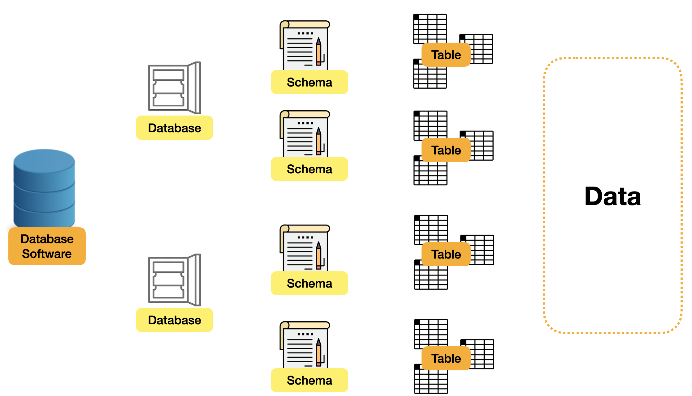

На изображении выше показано, как выглядит архитектура в типичной экосистеме программного обеспечения баз
данных.
1. Программное обеспечение баз данных: его можно рассматривать как обычное программное обеспечение
баз данных, такое как MySQL, Postgre SQL, MsSQL и т. д. Здесь мы будем использовать MySQL, поскольку это
одно из наиболее широко используемых программ баз данных в мире.
2. База данных. Мы можем разделить
структуры различных баз данных на программное обеспечение баз данных. В общем, мы можем разделить объекты
данных, имеющие разное коммерческое значение. Например, данные о запасах в США могут быть установлены в
одной базе данных, а данные о запасах в Лондоне — в другой базе данных.
3. База данныхx: это набор таблиц, которые
можно разделить и сгруппировать в соответствии с логикой, а на этом слое можно установить некоторые
метапараметры сведений о таблице, например, в плане. Но в некоторых программах баз данных, таких как MySQL,
схема и база данных объединены в одно.
4. Таблица: Ключевой раздел базы данных. В таблицах записываются
различные объекты данных, такие как пользователи, продукты и т. д. Каждая таблица отвечает за запись
размера, типа и значения столбца по умолчанию... для каждой строки данных в базе данных.
5. Данные. Самая
ценная часть базы данных — это сами данные. Могут храниться различные типы данных.
Обычно в базе данных, когда мы хотим создать схему, соответствующая структура синтаксиса SQL выглядит следующим образом:
Вот несколько основных моментов синтаксиса SQL: - Часть, состоящая только из заглавных букв, представляет собой так называемое 『ключевое слово』, которое представляет собой словарь, который должен использовать язык программирования SQL. Поскольку в языке SQL оно имеет особое значение, мы не можем использовать его для обозначения нашей schema, table и т. д. - Пара символов 『 ` 』, слово 『new_schema』, заключенное вместе, это часть нашего собственного ввода, объявляющего, что имя схемы, которую мы хотим создать, — new_schema.
Приведенное выше утверждение можно разделить на три части, чтобы его было легче понять:
1. Первый компонент самый простой; он создает схему и дает ей имя.
1. Установите кодировку символов, поскольку символы, используемые в человеческом языке, очень разнообразны. Например, японский и арабский языки будут иметь разные системы символов, поэтому соответствующее программное обеспечение также имеет множество методов кодирования символов; здесь мы устанавливаем общий символ 4-байтовой серии кодировки Unicode UTF-8.
1. Третий момент: в кодировке символов также будут некоторые производные. В приведенном здесь примере используется utf8mb4_unicode_ci, который является производным и может использовать символы, связанные с эмодзи. Здесь это показано только в качестве примера.
Самое главное: после описания оператора SQL вам нужна точка с запятой 『 ; 』 для обозначения конечной точки выполнения программы! После выполнения оператора и завершения создания можно выполнить следующие операторы SQL:
И как мы видим из результата этого оператора (на вкладке результатов ниже), теперь у нас есть новая схема под названием «new_schema»:
На этой карточке мы будем включать примеры схемы SQL и запросы, подобные этому. Однако простое чтение входных данных и результатов — не лучший способ обучения. Мы рекомендуем вам нажать «Редактировать в DB Fiddle», поэкспериментировать с существующими запросами и попрактиковаться в написании запросов самостоятельно.
Что здесь означают SELECT и FROM? Мы подробно объясним, что они означают, в разделе «Синтаксис SQL», который является второй главой этого руководства. Не волнуйтесь, на данный момент вам нужно только понять их буквальное значение на английском языке.
Что касается INFORMATION_SCHEMA.SCHEMATA, это место, где данные SCHEMA хранятся в MySQL. Основные данные схемы можно увидеть здесь.